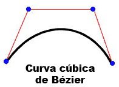
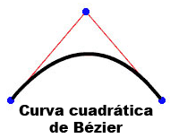
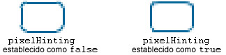

| Paquete | flash.display |
| Clase | public final class Graphics |
| Herencia | Graphics |
| Versión del lenguaje: | ActionScript 3.0 |
| Versiones de motor de ejecución: | AIR 1.0, Flash Player 9, Flash Lite 4 |
graphics que es un objeto Graphics. Las que siguen son algunas de las funciones auxiliares que se proporcionan para mayor facilidad: drawRect(), drawRoundRect(), drawCircle() y drawEllipse().
No puede crear un objeto Graphics directamente a partir del código ActionScript. Si llama a new Graphics(), se emitirá una excepción.
La clase Graphics es final; no puede tener subclases.
 Ocultar propiedades públicas heredadas
Ocultar propiedades públicas heredadas Mostrar propiedades públicas heredadas
Mostrar propiedades públicas heredadas| Método | Definido por | ||
|---|---|---|---|
beginBitmapFill(bitmap:BitmapData, matrix:Matrix = null, repeat:Boolean = true, smooth:Boolean = false):void
Rellena un área de dibujo con una imagen de mapa de bits. | Graphics | ||
Especifica un relleno simple monocolor que se utiliza en sucesivas llamadas a otros métodos Graphics (como lineTo() o drawCircle()). | Graphics | ||
beginGradientFill(type:String, colors:Array, alphas:Array, ratios:Array, matrix:Matrix = null, spreadMethod:String = "pad", interpolationMethod:String = "rgb", focalPointRatio:Number = 0):void
Especifica un relleno degradado para utilizarlo en las posteriores llamadas a otros métodos de Graphics (como, por ejemplo, lineTo() o drawCircle()) para el objeto. | Graphics | ||
Especifica un relleno de sombreado para utilizarlo en las posteriores llamadas a otros métodos de Graphics (como lineTo() o drawCircle()) para el objeto. | Graphics | ||
Borra el gráfico que se había dibujado en este objeto Graphics y restablece la configuración de relleno y estilo de línea. | Graphics | ||
Copia todos los comandos de dibujo del objeto Graphics de origen en el objeto Graphics que realiza la llamada. | Graphics | ||
cubicCurveTo(controlX1:Number, controlY1:Number, controlX2:Number, controlY2:Number, anchorX:Number, anchorY:Number):void
Dibuja una curva de Bezier desde la posición de dibujo actual hasta el punto de ancla especificado. | Graphics | ||
Dibuja una curva cuadrática de Bézier con el estilo de línea actual desde la posición de dibujo actual hasta (anchorX, anchorY) utilizando el punto de control especificado con (controlX, controlY). | Graphics | ||
Dibuja un círculo. | Graphics | ||
Dibuja una elipse. | Graphics | ||
Envía una serie de instancias de IGraphicsData para dibujo. | Graphics | ||
Envía una serie de comandos para dibujo. | Graphics | ||
Dibuja un rectángulo. | Graphics | ||
drawRoundRect(x:Number, y:Number, width:Number, height:Number, ellipseWidth:Number, ellipseHeight:Number = NaN):void
Dibuja un rectángulo redondeado. | Graphics | ||
drawTriangles(vertices:Vector.<Number>, indices:Vector.<int> = null, uvtData:Vector.<Number> = null, culling:String = "none"):void
Representa un conjunto de triángulos, normalmente para distorsionar mapas de bits, y le da una apariencia tridimensional. | Graphics | ||
Aplica un relleno a las líneas y curvas añadidas desde la última llamada al método beginFill(), beginGradientFill() o beginBitmapFill(). | Graphics | ||
 |
Indica si un objeto tiene definida una propiedad especificada. | Object | |
|
Indica si hay una instancia de la clase Object en la cadena de prototipo del objeto especificado como parámetro. | Object | |
lineBitmapStyle(bitmap:BitmapData, matrix:Matrix = null, repeat:Boolean = true, smooth:Boolean = false):void
Especifica un mapa de bits para utilizar en el trazo de líneas de dibujo. | Graphics | ||
lineGradientStyle(type:String, colors:Array, alphas:Array, ratios:Array, matrix:Matrix = null, spreadMethod:String = "pad", interpolationMethod:String = "rgb", focalPointRatio:Number = 0):void
Especifica un degradado para utilizar en el trazo de líneas de dibujo. | Graphics | ||
Especifica un sombreado para utilizar en el trazo de líneas de dibujo. | Graphics | ||
lineStyle(thickness:Number = NaN, color:uint = 0, alpha:Number = 1.0, pixelHinting:Boolean = false, scaleMode:String = "normal", caps:String = null, joints:String = null, miterLimit:Number = 3):void
Especifica un estilo de línea de degradado que se utilizará en las siguientes llamadas a métodos Graphics, como el método lineTo() o drawCircle(). | Graphics | ||
Dibuja una línea utilizando el estilo de línea actual desde la posición de dibujo actual hasta (x, y); la posición de dibujo actual se establece posteriormente como (x, y). | Graphics | ||
Mueve la posición de dibujo actual a (x, y). | Graphics | ||
|
Indica si existe la propiedad especificada y si es enumerable. | Object | |
Realiza una consulta de un objeto Sprite o Shape (y de sus elementos secundarios, opcionalmente) sobre el contenido de gráficos vectoriales. | Graphics | ||
|
Establece la disponibilidad de una propiedad dinámica para operaciones de bucle. | Object | |
|
Devuelve la representación de cadena de este objeto, con formato según las convenciones específicas de configuración regional. | Object | |
|
Devuelve la representación de cadena del objeto especificado. | Object | |
|
Devuelve el valor simple del objeto especificado. | Object | |
beginBitmapFill | () | método |
public function beginBitmapFill(bitmap:BitmapData, matrix:Matrix = null, repeat:Boolean = true, smooth:Boolean = false):void| Versión del lenguaje: | ActionScript 3.0 |
| Versiones de motor de ejecución: | AIR 1.0, Flash Player 9, Flash Lite 4 |
Rellena un área de dibujo con una imagen de mapa de bits. El mapa de bits rellena el área a base de repeticiones o mosaicos. El relleno surte efecto hasta que llame al método beginFill(), beginBitmapFill(), beginGradientFill() o beginShaderFill(). Al llamar al método clear(), se borra el relleno.
La aplicación representa el relleno cada vez que se dibujan tres o más puntos, o bien cuando se llama al método endFill().
Parámetros
bitmap:BitmapData — Una imagen de mapa de bits transparente u opaca que contiene los bits que deben mostrarse.
| |
matrix:Matrix (default = null)
matrix = new flash.geom.Matrix();
matrix.rotate(Math.PI / 4);
| |
repeat:Boolean (default = true)true, la imagen de mapa de bits se repite en un patrón de mosaico. Si el valor es false, la imagen no se repite y los bordes del mapa de bits se utilizan para cualquier área de relleno que se extienda más allá del mapa de bits.
Por ejemplo, considere el mapa de bits siguiente (un patrón de tablero de ajedrez de 20 x 20 píxeles):
Cuando
Cuando
| |
smooth:Boolean (default = false)false, las imágenes de mapa de bits que aumentan de escala se representan con un algoritmo colindante más cercano y se obtiene un aspecto pixelado. Si el valor es true, las imágenes de mapa de bits que aumentan de escala se representan con un algoritmo de interpolación bilineal. La representación con el algoritmo colindante más cercano es más rápida.
|


Elementos de API relacionados
Ejemplo ( Cómo utilizar este ejemplo )
image1.jpg) que se gira y se repite para rellenar un rectángulo.
- Se carga el archivo de imagen (
image1.jpg) mediante los objetosLoaderyURLRequest. En este caso el archivo está en el mismo directorio que el archivo SWF. El archivo SWF debe compilarse con Seguridad de reproducción local establecida como Acceder sólo a archivos locales. - Cuando se carga la imagen (se completa
Event), se llama al métododrawImage(). El métodoioErrorHandler()escribe un comentario de seguimiento si la imagen no se cargó correctamente. - En el método
drawImage(), se crea la instancia de un objetoBitmapDatay la anchura y altura se establecen con la imagen (image1.jpg). A continuación, la imagen de origen se dibuja en el objeto BitmapData. Después se dibuja en el objeto SpritemySpritey se utiliza el objeto BitmapData para rellenarlo. Mediante el objetoMatrix, el métodobeginBitmapFill()gira la imagen 45º y después comienza a rellenar el rectángulo con la imagen hasta que finaliza.
package {
import flash.display.Sprite;
import flash.display.BitmapData;
import flash.display.Loader;
import flash.net.URLRequest;
import flash.events.Event;
import flash.events.IOErrorEvent;
import flash.geom.Matrix;
public class Graphics_beginBitmapFillExample extends Sprite {
private var url:String = "image1.jpg";
private var loader:Loader = new Loader();
public function Graphics_beginBitmapFillExample() {
var request:URLRequest = new URLRequest(url);
loader.load(request);
loader.contentLoaderInfo.addEventListener(Event.COMPLETE, drawImage);
loader.contentLoaderInfo.addEventListener(IOErrorEvent.IO_ERROR, ioErrorHandler);
}
private function drawImage(event:Event):void {
var mySprite:Sprite = new Sprite();
var myBitmap:BitmapData = new BitmapData(loader.width, loader.height, false);
myBitmap.draw(loader, new Matrix());
var matrix:Matrix = new Matrix();
matrix.rotate(Math.PI/4);
mySprite.graphics.beginBitmapFill(myBitmap, matrix, true);
mySprite.graphics.drawRect(100, 50, 200, 90);
mySprite.graphics.endFill();
addChild(mySprite);
}
private function ioErrorHandler(event:IOErrorEvent):void {
trace("Unable to load image: " + url);
}
}
}
beginFill | () | método |
public function beginFill(color:uint, alpha:Number = 1.0):void| Versión del lenguaje: | ActionScript 3.0 |
| Versiones de motor de ejecución: | AIR 1.0, Flash Player 9, Flash Lite 4 |
Especifica un relleno simple monocolor que se utiliza en sucesivas llamadas a otros métodos Graphics (como lineTo() o drawCircle()). El relleno surte efecto hasta que llame al método beginFill(), beginBitmapFill(), beginGradientFill() o beginShaderFill(). Al llamar al método clear(), se borra el relleno.
La aplicación representa el relleno cada vez que se dibujan tres o más puntos, o bien cuando se llama al método endFill().
Parámetros
color:uint — Color del relleno (0xRRGGBB).
| |
alpha:Number (default = 1.0) |
Elementos de API relacionados
Ejemplo
Cómo utilizar este ejemplo
Consulte el ejemplo al final de esta clase para saber cómo utilizar este método.
beginGradientFill | () | método |
public function beginGradientFill(type:String, colors:Array, alphas:Array, ratios:Array, matrix:Matrix = null, spreadMethod:String = "pad", interpolationMethod:String = "rgb", focalPointRatio:Number = 0):void| Versión del lenguaje: | ActionScript 3.0 |
| Versiones de motor de ejecución: | AIR 1.0, Flash Player 9, Flash Lite 4 |
Especifica un relleno degradado para utilizarlo en las posteriores llamadas a otros métodos de Graphics (como lineTo() o drawCircle()) para el objeto. El relleno surte efecto hasta que llame al método beginFill(), beginBitmapFill(), beginGradientFill() o beginShaderFill(). Al llamar al método clear(), se borra el relleno.
La aplicación representa el relleno cada vez que se dibujan tres o más puntos, o bien cuando se llama al método endFill().
Parámetros
type:String — Un valor de la clase GradientType que especifica el tipo de degradado que debe utilizarse: GradientType.LINEAR o GradientType.RADIAL.
| |||||||||
colors:Array — Conjunto de valores de color RGB hexadecimales que se utiliza en el degradado; por ejemplo, rojo es 0xFF0000, azul es 0x0000FF, etc. Puede utilizar hasta 15 colores. Para cada color, especifique un valor correspondiente en los parámetros alphas y ratios.
| |||||||||
alphas:Array — Conjunto de valores alfa para los colores correspondientes del conjunto de colores; los valores válidos son del 0 al 100. Si el valor es inferior a 0, el valor predeterminado es 0. Si el valor es superior a 1, el valor predeterminado es 1.
| |||||||||
ratios:Array — Conjunto de proporciones de distribución de color; los valores válidos van de 0 a 255. Este valor define el porcentaje de la anchura donde el color se muestrea al 100%. El valor 0 representa la posición izquierda del cuadro de degradado, mientras que 255 representa la posición derecha del cuadro de degradado.
Nota: este valor representa posiciones del cuadro de degradado, no el espacio de coordenadas del degradado final, que podría ser más ancho o más delgado que el cuadro de degradado. Introduzca un valor con el parámetro Por ejemplo, en el caso de un degradado lineal con dos colores, azul y verde, el siguiente ejemplo ilustra la colocación de los colores en el degradado en función de los diferentes valores en el conjunto
Los valores del conjunto deben aumentar secuencialmente; por ejemplo, | |||||||||
matrix:Matrix (default = null)createGradientBox() que permite configurar cómodamente la matriz para utilizarla con el método beginGradientFill().
| |||||||||
spreadMethod:String (default = "pad")SpreadMethod.PAD, SpreadMethod.REFLECT o SpreadMethod.REPEAT.
Por ejemplo, imagine un degradado lineal sencillo entre dos colores:
import flash.geom.*
import flash.display.*
var fillType:String = GradientType.LINEAR;
var colors:Array = [0xFF0000, 0x0000FF];
var alphas:Array = [1, 1];
var ratios:Array = [0x00, 0xFF];
var matr:Matrix = new Matrix();
matr.createGradientBox(20, 20, 0, 0, 0);
var spreadMethod:String = SpreadMethod.PAD;
this.graphics.beginGradientFill(fillType, colors, alphas, ratios, matr, spreadMethod);
this.graphics.drawRect(0,0,100,100);
En este caso se utiliza
Si utiliza
Si utiliza
| |||||||||
interpolationMethod:String (default = "rgb")InterpolationMethod.LINEAR_RGB o InterpolationMethod.RGB
Por ejemplo, imagine un degradado lineal sencillo entre dos colores (con el parámetro
| |||||||||
focalPointRatio:Number (default = 0)focalPointRatio definido en 0,75:
|


Emite
ArgumentError — Si el parámetro type no es válido.
|
Elementos de API relacionados
beginShaderFill | () | método |
public function beginShaderFill(shader:Shader, matrix:Matrix = null):void| Versión del lenguaje: | ActionScript 3.0 |
| Versiones de motor de ejecución: | Flash Player 10, AIR 1.5 |
Especifica un relleno de sombreado para utilizarlo en las posteriores llamadas a otros métodos de Graphics (como lineTo() o drawCircle()) para el objeto. El relleno surte efecto hasta que llame al método beginFill(), beginBitmapFill(), beginGradientFill() o beginShaderFill(). Al llamar al método clear(), se borra el relleno.
La aplicación representa el relleno cada vez que se dibujan tres o más puntos, o bien cuando se llama al método endFill().
Los rellenos de sombreado no se admiten en procesamiento de GPU; las áreas rellenas se colorearán de cián.
Parámetros
shader:Shader — El sombreado que se utiliza en el relleno. Esta instancia de Shader no se requiere para especificar una entrada de imagen. No obstante, si se especifica una entrada de imagen en el sombreado, debe hacerse manualmente. Para especificar la entrada, establezca la propiedad input de la propiedad ShaderInput correspondiente de la propiedad Shader.data.
Cuando se transfiere una instancia de Shader como argumento, el sombreado se copia internamente. La operación de dibujo de relleno utiliza la copia interna, no una referencia al sombreado original. Todos los cambios realizados en el objeto shader, como la modificación de los valores de los parámetros, la entrada o el código de bytes, no se aplican al sombreado copiado que se utiliza en el relleno. | |
matrix:Matrix (default = null)
matrix = new flash.geom.Matrix();
matrix.rotate(Math.PI / 4);
Las coordenadas recibidas en el sombreado se basan en la matriz especificada para el parámetro |
Emite
ArgumentError — Si el tipo de salida de sombreado no es compatible con esta operación (el sombreado debe especificar una salida pixel3 o pixel4).
| |
ArgumentError — Si el sombreado especifica una entrada de imagen no suministrada.
| |
ArgumentError — Si es una instancia de ByteArray o Vector.<Number> que se utiliza como entrada, no se especifican las propiedades width y height para ShaderInput, o los valores especificados no coinciden con la cantidad de datos de los datos de entrada. Consulte la propiedad ShaderInput.input para obtener más información.
|
Elementos de API relacionados
clear | () | método |
public function clear():void| Versión del lenguaje: | ActionScript 3.0 |
| Versiones de motor de ejecución: | AIR 1.0, Flash Player 9, Flash Lite 4 |
Borra el gráfico que se había dibujado en este objeto Graphics y restablece la configuración de relleno y estilo de línea.
copyFrom | () | método |
public function copyFrom(sourceGraphics:Graphics):void| Versión del lenguaje: | ActionScript 3.0 |
| Versiones de motor de ejecución: | Flash Player 10, AIR 1.5, Flash Lite 4 |
Copia todos los comandos de dibujo del objeto Graphics de origen en el objeto Graphics que realiza la llamada.
Parámetros
sourceGraphics:Graphics — El objeto Graphics desde el que se copian los comandos de dibujo.
|
cubicCurveTo | () | método |
public function cubicCurveTo(controlX1:Number, controlY1:Number, controlX2:Number, controlY2:Number, anchorX:Number, anchorY:Number):void| Versión del lenguaje: | ActionScript 3.0 |
| Versiones de motor de ejecución: | Flash Player 11, AIR 3 |
Dibuja una curva de Bezier desde la posición de dibujo actual hasta el punto de ancla especificado. Las curvas cúbicas de Bézier constan de dos puntos de anclaje y dos puntos de control. La curva interpola los dos puntos de anclaje y se dirige a los dos puntos de control.

Los cuatro puntos que se utilizan para dibujar una curva de Bezier con el método cubicCurveTo() son los siguientes:
- La posición de dibujo actual es el primer punto de ancla.
- Los parámetros
anchorXyanchorYespecifican el segundo punto de ancla. - Los parámetros
controlX1ycontrolY1especifican el primer punto de control. - Los parámetros
controlX2ycontrolY2especifican el segundo punto de control.
Si llama al método cubicCurveTo() antes de llamar al método moveTo() método, la curva comienza en posición (0, 0).
Si el método cubicCurveTo() se ejecuta correctamente, el motor de ejecución de Flash establece la posición de dibujo actual en (anchorX, anchorY). Si el método cubicCurveTo() falla, la posición de dibujo actual permanece sin cambios.
Si el clip de película contiene contenido creado con las herramientas de dibujo de Flash, los resultados de las llamadas al método cubicCurveTo() se dibujarán debajo de dicho contenido.
Parámetros
controlX1:Number — Especifica la posición horizontal del primer punto de control con respecto al punto de registro del objeto de visualización principal.
| |
controlY1:Number — Especifica la posición vertical del primer punto de control con respecto al punto de registro del objeto de visualización principal.
| |
controlX2:Number — Especifica la posición horizontal del segundo punto de control con respecto al punto de registro del objeto de visualización principal.
| |
controlY2:Number — Especifica la posición vertical del segundo punto de control con respecto al punto de registro del objeto de visualización principal.
| |
anchorX:Number — Especifica la posición horizontal del punto de anclaje con respecto al punto de registro del objeto de visualización principal.
| |
anchorY:Number — Especifica la posición vertical del punto de anclaje con respecto al punto de registro del objeto de visualización principal.
|
Ejemplo ( Cómo utilizar este ejemplo )
Dibuje cuatro curvas para generar un círculo y rellénelo de azul.
Hay que tener en cuenta que, debido a la naturaleza de la ecuación cúbica de Bézier, no es un círculo perfecto. La mejor forma de dibujar un círculo es utilizar el método drawCircle() de la clase Graphics.
package {
import flash.display.Sprite;
import flash.display.Shape;
public class Graphics_cubicCurveToExample extends Sprite
{
public function Graphics_cubicCurveToExample():void
{
var rounderObject:Shape = new Shape();
rounderObject.graphics.beginFill(0x0000FF);
rounderObject.graphics.moveTo(250, 0);
rounderObject.graphics.cubicCurveTo(275, 0, 300, 25, 300, 50);
rounderObject.graphics.cubicCurveTo(300, 75, 275, 100, 250, 100);
rounderObject.graphics.cubicCurveTo(225, 100, 200, 75, 200, 50);
rounderObject.graphics.cubicCurveTo(200, 25, 225, 0, 250, 0);
rounderObject.graphics.endFill();
this.addChild(rounderObject);
}
}
}
curveTo | () | método |
public function curveTo(controlX:Number, controlY:Number, anchorX:Number, anchorY:Number):void| Versión del lenguaje: | ActionScript 3.0 |
| Versiones de motor de ejecución: | AIR 1.0, Flash Player 9, Flash Lite 4 |
Dibuja una curva cuadrática de Bézier con el estilo de línea actual desde la posición de dibujo actual hasta (anchorX, anchorY) utilizando el punto de control especificado con (controlX, controlY). La posición de dibujo actual se establece entonces como (anchorX, anchorY). Si el clip de película en el que está dibujando incluye contenido creado con las herramientas de dibujo de Flash, las llamadas al método curveTo() se dibujarán debajo de este contenido. Si llama al método curveTo() antes de realizar ninguna llamada al método moveTo(), la posición predeterminada para el dibujo actual será (0, 0). Si falta alguno de los parámetros, este método fallará y la posición del dibujo actual no cambiará.
La curva dibujada es una curva cuadrática de Bézier. Las curvas cuadráticas de Bézier constan de dos puntos de anclaje y un punto de control. La curva interpola los dos puntos de anclaje y se dirige al punto de control.

Parámetros
controlX:Number — Número que especifica la posición horizontal del punto de control con respecto al punto de registro del objeto de visualización principal.
| |
controlY:Number — Número que especifica la posición vertical del punto de control con respecto al punto de registro del objeto de visualización principal.
| |
anchorX:Number — Número que especifica la posición horizontal del siguiente punto de anclaje con respecto al punto de registro del objeto de visualización principal.
| |
anchorY:Number — Número que especifica la posición vertical del siguiente punto de anclaje con respecto al punto de registro del objeto de visualización principal.
|
Ejemplo ( Cómo utilizar este ejemplo )
Dibuje cuatro curvas para generar un círculo y rellénelo de verde.
Hay que tener en cuenta que, debido a la naturaleza de la ecuación cuadrática de Bézier, no es un círculo perfecto. La mejor forma de dibujar un círculo es utilizar el método drawCircle() de la clase Graphics.
package {
import flash.display.Sprite;
import flash.display.Shape;
public class Graphics_curveToExample1 extends Sprite
{
public function Graphics_curveToExample1():void
{
var roundObject:Shape = new Shape();
roundObject.graphics.beginFill(0x00FF00);
roundObject.graphics.moveTo(250, 0);
roundObject.graphics.curveTo(300, 0, 300, 50);
roundObject.graphics.curveTo(300, 100, 250, 100);
roundObject.graphics.curveTo(200, 100, 200, 50);
roundObject.graphics.curveTo(200, 0, 250, 0);
roundObject.graphics.endFill();
this.addChild(roundObject);
}
}
}
curveTo().
Se dibujan dos líneas curvas de 1 píxel y el espacio entre ellas se rellena de blanco. El método moveTo() se utiliza para colocar el dibujo actual en las coordenadas (100, 100). La primera curva mueve la posición del dibujo a (100, 200), su punto de destino. La segunda curva devuelve a la posición inicial (100, 100), su punto de destino. Los puntos de control horizontales determinan los distintos tamaños de curva.
package {
import flash.display.Sprite;
import flash.display.Shape;
public class Graphics_curveToExample2 extends Sprite
{
public function Graphics_curveToExample2() {
var newMoon:Shape = new Shape();
newMoon.graphics.lineStyle(1, 0);
newMoon.graphics.beginFill(0xFFFFFF);
newMoon.graphics.moveTo(100, 100);
newMoon.graphics.curveTo(30, 150, 100, 200);
newMoon.graphics.curveTo(50, 150, 100, 100);
graphics.endFill();
this.addChild(newMoon);
}
}
}
drawCircle | () | método |
public function drawCircle(x:Number, y:Number, radius:Number):void| Versión del lenguaje: | ActionScript 3.0 |
| Versiones de motor de ejecución: | AIR 1.0, Flash Player 9, Flash Lite 4 |
Dibuja un círculo. Establezca el estilo de línea, el relleno o ambos antes de llamar al método drawCircle() llamando al método linestyle(), lineGradientStyle(), beginFill(), beginGradientFill() o beginBitmapFill().
Parámetros
x:Number — La ubicación x del centro del círculo con respecto al punto de registro del objeto de visualización principal (en píxeles).
| |
y:Number — La ubicación y del centro del círculo con respecto al punto de registro del objeto de visualización principal (en píxeles).
| |
radius:Number — El radio del círculo (en píxeles).
|
Elementos de API relacionados
Ejemplo
Cómo utilizar este ejemplo
Consulte el ejemplo al final de esta clase para saber cómo utilizar este método.
drawEllipse | () | método |
public function drawEllipse(x:Number, y:Number, width:Number, height:Number):void| Versión del lenguaje: | ActionScript 3.0 |
| Versiones de motor de ejecución: | AIR 1.0, Flash Player 9, Flash Lite 4 |
Dibuja una elipse. Establezca el estilo de línea, el relleno o ambos antes de llamar al método drawEllipse() llamando al método linestyle(), lineGradientStyle(), beginFill(), beginGradientFill() o beginBitmapFill().
Parámetros
x:Number — La ubicación x de la parte superior izquierda del cuadro delimitador de la elipse con respecto al punto de registro del objeto de visualización principal (en píxeles).
| |
y:Number — La ubicación y la parte superior izquierda del cuadro delimitador de la elipse con respecto al punto de registro del objeto de visualización principal (en píxeles).
| |
width:Number — La anchura de la elipse (en píxeles).
| |
height:Number — La altura de la elipse (en píxeles).
|
Elementos de API relacionados
Ejemplo ( Cómo utilizar este ejemplo )
drawEgg() para dibujar tres huevos de distintos tamaños (tres tamaños de elipses), dependiendo del parámetro eggSize.
- El constructor llama a la función
drawEgg()y transfiere los parámetros horizontal y vertical donde se debería dibujar el huevo, además del tipo de huevo (eggSize). (La altura y la anchura de los huevos (las elipses) se pueden utilizar para decidir dónde mostrarlos.) - La función
drawEgg()dibuja las elipses de distintos tamaños y las rellena de blanco con el métodobeginFill(). No hay una gestión de errores avanzada escrita para esta función.
package {
import flash.display.Sprite;
import flash.display.Shape;
public class Graphics_drawEllipseExample extends Sprite
{
public static const SMALL:uint = 0;
public static const MEDIUM:uint = 1;
public static const LARGE:uint = 2;
public function Graphics_drawEllipseExample()
{
drawEgg(SMALL, 0, 100);
drawEgg(MEDIUM, 100, 60);
drawEgg(LARGE, 250, 35);
}
public function drawEgg(eggSize:uint, x:Number, y:Number):void {
var myEgg:Shape = new Shape();
myEgg.graphics.beginFill(0xFFFFFF);
myEgg.graphics.lineStyle(1);
switch(eggSize) {
case SMALL:
myEgg.graphics.drawEllipse(x, y, 60, 70);
break;
case MEDIUM:
myEgg.graphics.drawEllipse(x, y, 120, 150);
break;
case LARGE:
myEgg.graphics.drawEllipse(x, y, 150, 200);
break;
default:
trace ("Wrong size! There is no egg.");
break;
}
myEgg.graphics.endFill();
this.addChild(myEgg);
}
}
}
drawGraphicsData | () | método |
public function drawGraphicsData(graphicsData:Vector.<IGraphicsData>):void| Versión del lenguaje: | ActionScript 3.0 |
| Versiones de motor de ejecución: | Flash Player 10, AIR 1.5 |
Envía una serie de instancias de IGraphicsData para dibujo. Este método acepta un vector con objetos, incluidos trazados, rellenos y trazos, que implementan la interfaz IGraphicsData. Un vector de instancias de IGraphicsData puede hacer referencia a un fragmento de una forma o a un conjunto totalmente definido de datos para representar una forma completa.
Los trazados de gráficos pueden contener a su vez otros trazados de gráficos. Si el vector graphicsData incluye un trazado, este trazado y todos sus subtrazados se representan durante la operación.
Parámetros
graphicsData:Vector.<IGraphicsData> — Un vector con objetos gráficos. Cada uno debe implementar la interfaz IGraphicsData.
|
Elementos de API relacionados
Clase GraphicsBitmapFill
Clase GraphicsEndFill
Clase GraphicsGradientFill
Clase GraphicsPath
Clase GraphicsShaderFill
Clase GraphicsSolidFill
Clase GraphicsStroke
Clase GraphicsTrianglePath
Método readGraphicsData()
Ejemplo ( Cómo utilizar este ejemplo )
drawGraphicsData() para representar la forma.
package
{
import flash.display.*;
import flash.geom.*;
public class DrawGraphicsDataExample extends Sprite
{
public function DrawGraphicsDataExample()
{
// establish the fill properties
var myFill:GraphicsGradientFill = new GraphicsGradientFill();
myFill.colors = [0xEEFFEE, 0x0000FF];
myFill.matrix = new Matrix();
myFill.matrix.createGradientBox(100, 100, 0);
// establish the stroke properties
var myStroke:GraphicsStroke = new GraphicsStroke(2);
myStroke.fill = new GraphicsSolidFill(0x000000);
// establish the path properties
var pathCommands = new Vector.<int>(5, true);
pathCommands[0] = GraphicsPathCommand.MOVE_TO;
pathCommands[1] = GraphicsPathCommand.LINE_TO;
pathCommands[2] = GraphicsPathCommand.LINE_TO;
pathCommands[3] = GraphicsPathCommand.LINE_TO;
pathCommands[4] = GraphicsPathCommand.LINE_TO;
var pathCoordinates:Vector.<Number> = new Vector.<Number>(10, true);
pathCoordinates.push(10,10, 10,100, 100,100, 100,10, 10,10);
var myPath:GraphicsPath = new GraphicsPath(pathCommands, pathCoordinates);
// populate the IGraphicsData Vector array
var myDrawing:Vector.<IGraphicsData> = new Vector.<IGraphicsData>(3, true);
myDrawing[0] = myFill;
myDrawing[1] = myStroke;
myDrawing[2] = myPath;
// render the drawing
graphics.drawGraphicsData(myDrawing);
}
}
}
drawPath | () | método |
public function drawPath(commands:Vector.<int>, data:Vector.<Number>, winding:String = "evenOdd"):void| Versión del lenguaje: | ActionScript 3.0 |
| Versiones de motor de ejecución: | Flash Player 10, AIR 1.5 |
Envía un número de comandos para dibujo. El método drawPath() acepta un Vector de comandos de dibujo individuales moveTo(), lineTo() y curveTo(), y los combina en una sola llamada. Los parámetros del método drawPath() combinan comandos de dibujo con una dirección de dibujo y pares de valores de coordenadas “x” e “y”. Los comandos de dibujo son números enteros representados como constantes definidas en la clase GraphicsPathCommand. Los pares de valores de coordenadas x, y son objetos Number de un conjunto donde cada par define una ubicación de coordenadas. La dirección de dibujo es un valor de la clase GraphicsPathWinding.
Por lo general, los dibujos se representan más rápidamente mediante drawPath() que con una serie de llamadas a método lineTo() y curveTo() individuales.
El método drawPath() utiliza un cálculo de coma flotante, por lo que la rotación y el cambio de escala de las formas es más preciso y proporciona mejores resultados. Sin embargo, las curvas enviadas con el método drawPath() pueden contener pequeños errores de alineación de subpíxeles si se utiliza con los métodos lineTo() y curveTo().
El método drawPath() también utiliza reglas distintas para rellenar y dibujar líneas. Estas reglas son:
- Si se aplica un relleno para representar un trazado:
- No se representan subtrazados de menos de 3 puntos. (Tenga en cuenta, no obstante, que la representación sí se realiza, aunque siempre según las reglas de trazos siguientes.)
- Los subtrazados no cerrados (el punto final no coincide con el punto inicial) se cierran de forma implícita.
- Si se aplica un trazo para representar un trazado:
- Los subtrazados pueden estar formados por cualquier número de puntos.
- El subtrazado nunca se cierra de forma implícita.
Parámetros
commands:Vector.<int> — Vector de números enteros que representa comandos de dibujo. El conjunto de valores aceptados se define mediante constantes en la clase GraphicsPathCommand.
| |
data:Vector.<Number> — Un vector de instancias Number donde cada pareja de números se trata como una ubicación de coordenadas (un par x, y). Los pares de valores de coordenadas x, y no son objetos Point; el vector data es una serie de números donde cada grupo de dos números representa una ubicación de coordenadas.
| |
winding:String (default = "evenOdd") |
Elementos de API relacionados
Ejemplo ( Cómo utilizar este ejemplo )
drawPath() para representar una estrella azul. El primer Vector, star_commands, contiene una serie de constantes que representan comandos de dibujo de la clase GraphicsPathCommand. El segundo vector, star_coord, contiene cinco conjuntos de pares de coordenadas x, y. El método drawPath() hace coincidir los comandos con las posiciones para dibujar la estrella.
package
{
import flash.display.*;
public class DrawPathExample extends Sprite
{
public function DrawPathExample()
{
var star_commands:Vector.<int> = new Vector.<int>(5, true);
star_commands[0] = GraphicsPathCommand.MOVE_TO;
star_commands[1] = GraphicsPathCommand.LINE_TO;
star_commands[2] = GraphicsPathCommand.LINE_TO;
star_commands[3] = GraphicsPathCommand.LINE_TO;
star_commands[4] = GraphicsPathCommand.LINE_TO;
var star_coord:Vector.<Number> = new Vector.<Number>(10, true);
star_coord[0] = 66; //x
star_coord[1] = 10; //y
star_coord[2] = 23;
star_coord[3] = 127;
star_coord[4] = 122;
star_coord[5] = 50;
star_coord[6] = 10;
star_coord[7] = 49;
star_coord[8] = 109;
star_coord[9] = 127;
graphics.beginFill(0x003366);
graphics.drawPath(star_commands, star_coord);
}
}
}
drawPath() utiliza el número de vueltas par/impar. De este modo, se consigue que la estrella no se rellene. Especifique el tipo de número de vueltas distinto de cero para que el tercer parámetro rellene el centro de la estrella:
graphics.drawPath(star_commands, star_coord, GraphicsPathWinding.NON_ZERO);
drawRect | () | método |
public function drawRect(x:Number, y:Number, width:Number, height:Number):void| Versión del lenguaje: | ActionScript 3.0 |
| Versiones de motor de ejecución: | AIR 1.0, Flash Player 9, Flash Lite 4 |
Dibuja un rectángulo. Establezca el estilo de línea, el relleno o ambos antes de llamar al método drawRect() llamando al método linestyle(), lineGradientStyle(), beginFill(), beginGradientFill() o beginBitmapFill().
Parámetros
x:Number — Número que indica la posición horizontal con respecto al punto de registro del objeto de visualización principal (en píxeles).
| |
y:Number — Número que indica la posición vertical con respecto al punto de registro del objeto de visualización principal (en píxeles).
| |
width:Number — La anchura del rectángulo (en píxeles).
| |
height:Number — La altura del rectángulo (en píxeles).
|
Emite
ArgumentError — Si los parámetros width o height no son un número (Number.NaN).
|
Elementos de API relacionados
Ejemplo ( Cómo utilizar este ejemplo )
var movieClip:MovieClip = new MovieClip(); movieClip.graphics.beginFill(0xFF0000); movieClip.graphics.drawRect(0, 0, 100, 80); movieClip.graphics.endFill(); movieClip.x = 10; movieClip.y = 10; addChild(movieClip);
drawRoundRect | () | método |
public function drawRoundRect(x:Number, y:Number, width:Number, height:Number, ellipseWidth:Number, ellipseHeight:Number = NaN):void| Versión del lenguaje: | ActionScript 3.0 |
| Versiones de motor de ejecución: | AIR 1.0, Flash Player 9, Flash Lite 4 |
Dibuja un rectángulo redondeado. Establezca el estilo de línea, el relleno o ambos antes de llamar al método drawRoundRect() llamando al método linestyle(), lineGradientStyle(), beginFill(), beginGradientFill() o beginBitmapFill().
Parámetros
x:Number — Número que indica la posición horizontal con respecto al punto de registro del objeto de visualización principal (en píxeles).
| |
y:Number — Número que indica la posición vertical con respecto al punto de registro del objeto de visualización principal (en píxeles).
| |
width:Number — La anchura del rectángulo redondeado (en píxeles).
| |
height:Number — La altura del rectángulo redondeado (en píxeles).
| |
ellipseWidth:Number — La anchura de la elipse utilizada para dibujar esquinas redondeadas (en píxeles).
| |
ellipseHeight:Number (default = NaN)ellipseWidth.
|
Emite
ArgumentError — Si los parámetros width, height, ellipseWidth o ellipseHeight no son un número (Number.NaN).
|
Elementos de API relacionados
Ejemplo
Cómo utilizar este ejemplo
Consulte el ejemplo al final de esta clase para saber cómo utilizar este método.
drawTriangles | () | método |
public function drawTriangles(vertices:Vector.<Number>, indices:Vector.<int> = null, uvtData:Vector.<Number> = null, culling:String = "none"):void| Versión del lenguaje: | ActionScript 3.0 |
| Versiones de motor de ejecución: | Flash Player 10, AIR 1.5 |
Representa un conjunto de triángulos, normalmente para distorsionar mapas de bits, y le da una apariencia tridimensional. El método drawTriangles() asigna o bien el relleno actual, o un relleno de mapa de bits a las caras del triángulo mediante un conjunto de coordenadas (u,v).
Se puede utilizar cualquier tipo de relleno, pero si el relleno tiene una matriz, ésta se omite.
Un parámetro uvtData mejora la asignación de texturas cuando se utiliza relleno de mapa de bits.
Parámetros
vertices:Vector.<Number> — Un vector de elementos Number donde cada pareja de números se trata como una ubicación de coordenadas (un par x, y). Se requiere el parámetro vertices.
| |
indices:Vector.<int> (default = null)indexes es null, cada tres vértices (seis pares x,y en el vector vertices) define un triángulo. En caso contrario, cada índice hace referencia a un vértice (par de números del vector vertices). Por ejemploindexes[1] hace referencia a (vertices[2], vertices[3]). El parámetro indexes es opcional, pero los índices suelen reducir la cantidad de datos enviados y la cantidad de datos calculados.
| |
uvtData:Vector.<Number> (default = null)Si la longitud de este vector duplica la del vector Si la longitud de este vector triplica la del vector Si el parámetro | |
culling:String (default = "none") |
Elementos de API relacionados
endFill | () | método |
public function endFill():void| Versión del lenguaje: | ActionScript 3.0 |
| Versiones de motor de ejecución: | AIR 1.0, Flash Player 9, Flash Lite 4 |
Aplica un relleno a las líneas y curvas añadidas desde la última llamada al método beginFill(), beginGradientFill() o beginBitmapFill(). Flash utiliza el relleno especificado en la anterior llamada al método beginFill(), beginGradientFill() o beginBitmapFill(). Si la posición de dibujo actual no es la misma que la posición anterior especificada en un método moveTo() y se ha definido un relleno, el trazado se cerrará con una línea y luego se rellenará.
Elementos de API relacionados
lineBitmapStyle | () | método |
public function lineBitmapStyle(bitmap:BitmapData, matrix:Matrix = null, repeat:Boolean = true, smooth:Boolean = false):void| Versión del lenguaje: | ActionScript 3.0 |
| Versiones de motor de ejecución: | Flash Player 10, AIR 1.5 |
Especifica un mapa de bits para utilizar en el trazo de líneas de dibujo.
El estilo de línea de mapa de bits se utiliza en las siguientes llamadas a métodos Graphics, como el método lineTo() o drawCircle(). El estilo de línea surte efecto hasta que llame a los métodos lineStyle() o lineGradientStyle(), o vuelva a llamar al método lineBitmapStyle() con distintos parámetros.
Puede efectuar una llamada al método lineBitmapStyle() en mitad de un trazado para especificar diferentes estilos para los distintos segmentos de línea de un trazado.
Llame al método lineStyle() antes de llamar al método lineBitmapStyle() para habilitar el trazo; si no lo hace, el estilo de línea es undefined.
Las llamadas al método clear() volverán a establecer el estilo de línea con el valor undefined.
Parámetros
bitmap:BitmapData — Mapa de bits utilizado para el trazo de la línea.
| |
matrix:Matrix (default = null) | |
repeat:Boolean (default = true) | |
smooth:Boolean (default = false) |
Elementos de API relacionados
lineGradientStyle | () | método |
public function lineGradientStyle(type:String, colors:Array, alphas:Array, ratios:Array, matrix:Matrix = null, spreadMethod:String = "pad", interpolationMethod:String = "rgb", focalPointRatio:Number = 0):void| Versión del lenguaje: | ActionScript 3.0 |
| Versiones de motor de ejecución: | AIR 1.0, Flash Player 9 |
Especifica un degradado para utilizar en el trazo de líneas de dibujo.
El estilo de línea de degradado se utilizará en las siguientes llamadas a métodos Graphics, como el método lineTo() o drawCircle(). El estilo de línea surte efecto hasta que llame a los métodos lineStyle() o lineBitmapStyle(), o vuelva a llamar al método lineGradientStyle() con distintos parámetros.
Puede efectuar una llamada al método lineGradientStyle() en mitad de un trazado para especificar diferentes estilos para los distintos segmentos de línea de un trazado.
Llame al método lineStyle() antes de llamar al método lineGradientStyle() para habilitar el trazo; si no lo hace, el estilo de línea es undefined.
Las llamadas al método clear() volverán a establecer el estilo de línea con el valor undefined.
Parámetros
type:String — Un valor de la clase GradientType que especifica el tipo de degradado que debe utilizarse, GradientType.LINEAR o GradientType.RADIAL.
| |||||||||
colors:Array — Conjunto de valores de color RGB hexadecimales que se utiliza en el degradado (por ejemplo, rojo es 0xFF0000, azul es 0x0000FF, etc.).
| |||||||||
alphas:Array — Conjunto de valores alfa para los colores correspondientes del conjunto de colores; los valores válidos son del 0 al 100. Si el valor es inferior a 0, el valor predeterminado es 0. Si el valor es superior a 1, el valor predeterminado es 1.
| |||||||||
ratios:Array — Conjunto de proporciones de distribución de color; los valores válidos van de 0 a 255. Este valor define el porcentaje de la anchura donde el color se muestrea al 100%. El valor 0 representa la posición izquierda del cuadro de degradado, mientras que 255 representa la posición derecha del cuadro de degradado. Este valor representa posiciones del cuadro de degradado, no el espacio de coordenadas del degradado final, que podría ser más ancho o más delgado que el cuadro de degradado. Introduzca un valor con el parámetro colors.
Por ejemplo, en el caso de un degradado lineal con dos colores, azul y verde, la siguiente figura ilustra la colocación de los colores en el degradado en función de los diferentes valores en el conjunto
Los valores del conjunto deben aumentar secuencialmente; por ejemplo, | |||||||||
matrix:Matrix (default = null)createGradientBox(), que permite configurar cómodamente la matriz para utilizarla con el método lineGradientStyle().
| |||||||||
spreadMethod:String (default = "pad")
| |||||||||
interpolationMethod:String (default = "rgb")spreadMethod definido como SpreadMethod.REFLECT). Los diferentes métodos de interpolación afectan al aspecto de este modo:
| |||||||||
focalPointRatio:Number (default = 0)focalPointRatio como -0,75:
|
Elementos de API relacionados
lineBitmapStyle()
flash.geom.Matrix.createGradientBox()
flash.display.GradientType
flash.display.SpreadMethod
Ejemplo ( Cómo utilizar este ejemplo )
El método createGradientBox() de la clase Matrix se utiliza para definir el cuadro de degradado en 200 de ancho y 40 de alto. El grosor de la línea se establece en 5 píxeles. El grosor del trazo se debe definir para el método lineGradientStyle(). El degradado se establece en lineal. Los colores del degradado se establecen en rojo, verde y azul. La transparencia (el valor alfa) para los colores se establece en 1 (opaco). La distribución del degradado es uniforme, donde los colores se muestrean a 100% en 0 (posición a la izquierda del cuadro degradado), 128 (mitad del cuadro) y 255 (posición a la derecha del cuadro). La anchura del rectángulo abarca todo el espectro del degradado, mientras el círculo abarca el 50% desde la mitad del espectro.
package {
import flash.display.Sprite;
import flash.display.Shape;
import flash.geom.Matrix;
import flash.display.GradientType;
public class Graphics_lineGradientStyleExample extends Sprite
{
public function Graphics_lineGradientStyleExample()
{
var myShape:Shape = new Shape();
var gradientBoxMatrix:Matrix = new Matrix();
gradientBoxMatrix.createGradientBox(200, 40, 0, 0, 0);
myShape.graphics.lineStyle(5);
myShape.graphics.lineGradientStyle(GradientType.LINEAR, [0xFF0000,
0x00FF00, 0x0000FF], [1, 1, 1], [0, 128, 255], gradientBoxMatrix);
myShape.graphics.drawRect(0, 0, 200, 40);
myShape.graphics.drawCircle(100, 120, 50);
this.addChild(myShape);
}
}
}
lineShaderStyle | () | método |
public function lineShaderStyle(shader:Shader, matrix:Matrix = null):void| Versión del lenguaje: | ActionScript 3.0 |
| Versiones de motor de ejecución: | Flash Player 10, AIR 1.5 |
Especifica un sombreado para utilizar en el trazo de líneas de dibujo.
El estilo de línea de sombreado se utiliza en las siguientes llamadas a métodos Graphics, como el método lineTo() o drawCircle(). El estilo de línea surte efecto hasta que llame a los métodos lineStyle() o lineGradientStyle(), o vuelva a llamar al método lineBitmapStyle() con distintos parámetros.
Puede efectuar una llamada al método lineShaderStyle() en mitad de un trazado para especificar diferentes estilos para los distintos segmentos de línea de un trazado.
Llame al método lineStyle() antes de llamar al método lineShaderStyle() para habilitar el trazo; si no lo hace, el estilo de línea es undefined.
Las llamadas al método clear() volverán a establecer el estilo de línea con el valor undefined.
Parámetros
shader:Shader — Sombreado utilizado para el trazo de la línea.
| |
matrix:Matrix (default = null) |
Elementos de API relacionados
lineStyle | () | método |
public function lineStyle(thickness:Number = NaN, color:uint = 0, alpha:Number = 1.0, pixelHinting:Boolean = false, scaleMode:String = "normal", caps:String = null, joints:String = null, miterLimit:Number = 3):void| Versión del lenguaje: | ActionScript 3.0 |
| Versiones de motor de ejecución: | AIR 1.0, Flash Player 9, Flash Lite 4 |
Especifica un estilo de línea de degradado que se utilizará en las siguientes llamadas a métodos Graphics como lineTo() o drawCircle(). El estilo de línea surte efecto hasta que llame a los métodos lineGradientStyle() o lineBitmapStyle(), o al método lineStyle() con distintos parámetros.
Puede efectuar una llamada al método lineStyle() en mitad de un trazado para especificar diferentes estilos para los distintos segmentos de línea de un trazado.
Nota: las llamadas al método clear() volverán a establecer el estilo de línea con el valor undefined.
Nota: Flash Lite 4 sólo admite los primeros tres parámetros (thickness, colory alpha).
Parámetros
thickness:Number (default = NaN) | |||||||||||
color:uint (default = 0) | |||||||||||
alpha:Number (default = 1.0) | |||||||||||
pixelHinting:Boolean (default = false)pixelHinting establecido en true, los anchos de línea se ajustan a la anchura completa de los píxeles. Con pixelHinting definido con el valor false, pueden aparecer curvas y líneas rectas no conectadas. Por ejemplo, las siguientes ilustraciones muestran cómo Flash Player o Adobe AIR representa dos rectángulos redondeados idénticos, con la única diferencia de que el parámetro pixelHinting empleado en el método lineStyle() se ha definido de forma diferente (las imágenes tienen una escala del 200% para que se aprecie mejor la diferencia):
 Si no se suministra ningún valor, la línea no utilizará consejos de píxeles. | |||||||||||
scaleMode:String (default = "normal")
| |||||||||||
caps:String (default = null)CapsStyle.NONE, CapsStyle.ROUND y CapsStyle.SQUARE. Si no se indica ningún valor, Flash utiliza extremos redondos.
Por ejemplo, las ilustraciones siguientes muestran los diferentes ajustes de
| |||||||||||
joints:String (default = null)JointStyle.BEVEL, JointStyle.MITER y JointStyle.ROUND. Si no se indica ningún valor, Flash utiliza juntas redondas.
Por ejemplo, las ilustraciones siguientes muestran los diferentes ajustes de Nota: cuando | |||||||||||
miterLimit:Number (default = 3)jointStyle se define como "miter". El valor de miterLimit representa la longitud con la que una esquina se puede extender más allá del punto en que las líneas se cortan para formar una unión. El valor expresa un factor del valor de thickness (grosor) de la línea. Por ejemplo, con un factor miterLimit de 2,5 y un valor thickness (grosor) de 10 píxeles, la esquina se corta a los 25 píxeles.
Por ejemplo, tenemos las siguientes líneas en ángulo, cada una dibujada con un valor
Tenga en cuenta que un determinado valor
|


Elementos de API relacionados
Ejemplo
Cómo utilizar este ejemplo
Consulte el ejemplo de los métodos lineTo() o moveTo() para ver ilustraciones sobre cómo utilizar el método
getStyle().
lineTo | () | método |
public function lineTo(x:Number, y:Number):void| Versión del lenguaje: | ActionScript 3.0 |
| Versiones de motor de ejecución: | AIR 1.0, Flash Player 9, Flash Lite 4 |
Dibuja una línea utilizando el estilo de línea actual desde la posición de dibujo actual hasta (x, y); la posición de dibujo actual se establece posteriormente como (x, y). Si el objeto de visualización en el que está dibujando incluye contenido creado con las herramientas de dibujo de Flash, las llamadas al método lineTo() se dibujarán debajo de este contenido. Si llama a lineTo() antes de realizar ninguna llamada al método moveTo(), la posición de predeterminada para el dibujo actual será (0, 0). Si falta alguno de los parámetros, este método fallará y la posición del dibujo actual no cambiará.
Parámetros
x:Number — Número que indica la posición horizontal con respecto al punto de registro del objeto de visualización principal (en píxeles).
| |
y:Number — Número que indica la posición vertical con respecto al punto de registro del objeto de visualización principal (en píxeles).
|
Ejemplo ( Cómo utilizar este ejemplo )
lineTo(), comenzando por los píxeles (100, 100).
El grosor de línea se establece en 10 píxeles, el color es dorado y opaco, los extremos al final de las líneas se definen como ninguno (ya que todas las líneas están unidas), y la unión entre las líneas se establece en MITER con el límite de angular establecido en 10, para tener esquinas marcadas.
package {
import flash.display.Sprite;
import flash.display.LineScaleMode;
import flash.display.CapsStyle;
import flash.display.JointStyle;
import flash.display.Shape;
public class Graphics_lineToExample extends Sprite {
public function Graphics_lineToExample() {
var trapezoid:Shape = new Shape();
trapezoid.graphics.lineStyle(10, 0xFFD700, 1, false, LineScaleMode.VERTICAL,
CapsStyle.NONE, JointStyle.MITER, 10);
trapezoid.graphics.moveTo(100, 100);
trapezoid.graphics.lineTo(120, 50);
trapezoid.graphics.lineTo(200, 50);
trapezoid.graphics.lineTo(220, 100);
trapezoid.graphics.lineTo(100, 100);
this.addChild(trapezoid);
}
}
}
moveTo | () | método |
public function moveTo(x:Number, y:Number):void| Versión del lenguaje: | ActionScript 3.0 |
| Versiones de motor de ejecución: | AIR 1.0, Flash Player 9, Flash Lite 4 |
Mueve la posición de dibujo actual a (x, y). Si falta alguno de los parámetros, este método fallará y la posición del dibujo actual no cambiará.
Parámetros
x:Number — Número que indica la posición horizontal con respecto al punto de registro del objeto de visualización principal (en píxeles).
| |
y:Number — Número que indica la posición vertical con respecto al punto de registro del objeto de visualización principal (en píxeles).
|
Ejemplo ( Cómo utilizar este ejemplo )
moveTo() y lineTo().
Con el método lineStyle(), el grosor de línea se establece en 3 píxeles. También se establece que no se ajuste. El color se establece en rojo con una opacidad del 25%. La propiedad CapsStyle se establece en cuadrado (el valor predeterminado es redondeado).
Debido a que Graphics_moveToExample es una instancia de la clase Sprite, tiene acceso a todos los métodos de la clase Graphics. Se pueden utilizar los métodos de la clase Graphics para dibujar directamente en el objeto Sprite Graphic_moveToExample. Sin embargo, no colocar el objeto de dibujo de vectores en un Shape limita la forma en la que se gestionan, mueven o cambian.
package {
import flash.display.Sprite;
import flash.display.CapsStyle;
import flash.display.LineScaleMode;
public class Graphics_moveToExample extends Sprite
{
public function Graphics_moveToExample() {
graphics.lineStyle(3, 0x990000, 0.25, false,
LineScaleMode.NONE, CapsStyle.SQUARE);
graphics.moveTo(10, 20);
graphics.lineTo(20, 20);
graphics.moveTo(30, 20);
graphics.lineTo(50, 20);
graphics.moveTo(60, 20);
graphics.lineTo(80, 20);
graphics.moveTo(90, 20);
graphics.lineTo(110, 20);
graphics.moveTo(120, 20);
graphics.lineTo(130, 20);
}
}
}
readGraphicsData | () | método |
public function readGraphicsData(recurse:Boolean = true):Vector.<IGraphicsData>| Versión del lenguaje: | ActionScript 3.0 |
| Versiones de motor de ejecución: | Flash Player 11.6, AIR 3.6 |
Realiza una consulta de un objeto Sprite o Shape (y de sus elementos secundarios, opcionalmente) sobre el contenido de gráficos vectoriales. El resultado es un Vector de objetos IGraphicsData. Se aplican transformaciones al objeto de visualización antes de la consulta, por lo que todas las rutas devueltas se encuentran en el mismo espacio de coordenadas. Las coordenadas del conjunto de datos de resultados son relativas al escenario, no al objeto de visualización que se está muestreando.
El resultado incluye los siguientes tipos de objetos, con las limitaciones especificadas:
- GraphicsSolidFill
- GraphicsGradientFill
- Todas las propiedades de relleno con degradado se devuelven mediante
readGraphicsData(). - La matriz devuelta es muy similar, pero no exactamente igual, a la matriz de entrada.
- Todas las propiedades de relleno con degradado se devuelven mediante
- GraphicsEndFill
- GraphicsBitmapFill
- La matriz devuelta es muy similar, pero no exactamente igual, a la matriz de entrada.
repeates siempre true.smoothes siempre false.
- GraphicsStroke
thicknesses un valor admitido.filladmite GraphicsSolidFill, GraphicsGradientFill y GraphicsBitmapFill como se ha descrito anteriormente- Las demás propiedades tienen los valores predeterminados.
- GraphicsPath
- Los únicos comandos admitidos son MOVE_TO, CURVE_TO y LINE_TO.
Los siguientes elementos y transformaciones visuales no se pueden representar y no se incluyen en el resultado:
- Máscaras
- Texto, con una excepción: el texto estático definido con tipo de suavizado "Suavizado para animación" se representa como formas vectoriales y por tanto no se incluye en el resultado.
- Rellenos de sombreado
- Modos de mezcla
- Escala de 9 divisiones
- Triángulos (creados con el método
drawTriangles()) - Fondo opaco
- Configuración
scrollrect - Transformaciones 2.5D
- Objetos no visibles (objetos cuya propiedad
visibletiene el valorfalse)
Parámetros
recurse:Boolean (default = true) |
Vector.<IGraphicsData> — Vector de objetos IGraphicsData que representa el contenido de gráficos de vector del objeto de visualización relacionado
|
Elementos de API relacionados
Clase GraphicsSolidFille
Clase GraphicsGradientFill
Clase GraphicsEndFill
Clase GraphicsStroke
Clase GraphicsBitmapFill
Clase GraphicsPath
Método drawGraphicsData()
Ejemplo ( Cómo utilizar este ejemplo )
readGraphicsData() para recuperar el contenido de gráficos vectoriales de un objeto de visualización. Luego se vuelve a dibujar dicho contenido en otro objeto del escenario, cuando el usuario hace clic en este.
Aunque el contenido vectorial original se dibuja mediante el método drawGraphicsData(), los objetos de datos vectoriales recuperados por el método readGraphicsData() no corresponden exactamente a los pasados al método drawGraphicsData(). Por ejemplo, los datos de resultados incluyen comandos GraphicsSolidFill y GraphicsEndFill, ambos implícitos pero no realmente presentes en los datos de gráficos originales.
package
{
import flash.display.GraphicsPathCommand;
import flash.display.IGraphicsData;
import flash.display.Shape;
import flash.display.Sprite;
import flash.events.MouseEvent;
public class ReadGraphicsDataExample extends Sprite
{
private var original:Shape;
private var copy:Shape;
public function ReadGraphicsDataExample()
{
original = new Shape();
original.x = 50;
original.y = 100;
addChild(original);
drawSquare();
copy = new Shape();
copy.x = 250;
copy.y = 100;
addChild(copy);
stage.addEventListener(MouseEvent.CLICK, drawCopyOnClick);
}
private function drawCopyOnClick(event:MouseEvent):void
{
// reset
copy.graphics.clear();
// Sample the vector data. Move the original to 0,0
// before sampling so that the coordinates match the
// relative coordinates of the original.
var xPos:Number = original.x;
var yPos:Number = original.y;
original.x = 0;
original.y = 0;
var result:Vector.<IGraphicsData> = original.graphics.readGraphicsData(false);
original.x = xPos;
original.y = yPos;
// re-draw
copy.graphics.drawGraphicsData(result);
}
private function drawSquare():void
{
var squareCommands:Vector.<int> = new Vector.<int>(5, true);
squareCommands[0] = GraphicsPathCommand.MOVE_TO;
squareCommands[1] = GraphicsPathCommand.LINE_TO;
squareCommands[2] = GraphicsPathCommand.LINE_TO;
squareCommands[3] = GraphicsPathCommand.LINE_TO;
var squareCoordinates:Vector.<Number> = new Vector.<Number>(8, true);
squareCoordinates[0] = 0;
squareCoordinates[1] = 0;
squareCoordinates[2] = 50;
squareCoordinates[3] = 0;
squareCoordinates[4] = 50;
squareCoordinates[5] = 50;
squareCoordinates[6] = 0;
squareCoordinates[7] = 50;
original.graphics.beginFill(0x003366);
original.graphics.drawPath(squareCommands, squareCoordinates);
}
}
}
- Declare una propiedad
sizepara utilizarla posteriormente en la determinación del tamaño de cada forma. - Declare propiedades que establezcan el color de fondo en naranja, el color del borde en gris oscuro, el tamaño del borde en 0 píxeles, el radio de la esquina en 9 píxeles y defina el espacio entre el borde del escenario y los demás objetos en 5 píxeles.
- Utilice las propiedades declaradas en los pasos anteriores junto con los métodos incorporados de la clase Graphics para dibujar el círculo, el rectángulo redondeado y el cuadrado en las coordenadas x = 0, y = 0.
- Vuelva a dibujar cada una de las formas en la parte superior del escenario, comenzando en x = 5, y = 5, con un espaciado de 5 píxeles entre las formas.
package {
import flash.display.DisplayObject;
import flash.display.Graphics;
import flash.display.Shape;
import flash.display.Sprite;
public class GraphicsExample extends Sprite {
private var size:uint = 80;
private var bgColor:uint = 0xFFCC00;
private var borderColor:uint = 0x666666;
private var borderSize:uint = 0;
private var cornerRadius:uint = 9;
private var gutter:uint = 5;
public function GraphicsExample() {
doDrawCircle();
doDrawRoundRect();
doDrawRect();
refreshLayout();
}
private function refreshLayout():void {
var ln:uint = numChildren;
var child:DisplayObject;
var lastChild:DisplayObject = getChildAt(0);
lastChild.x = gutter;
lastChild.y = gutter;
for (var i:uint = 1; i < ln; i++) {
child = getChildAt(i);
child.x = gutter + lastChild.x + lastChild.width;
child.y = gutter;
lastChild = child;
}
}
private function doDrawCircle():void {
var child:Shape = new Shape();
var halfSize:uint = Math.round(size / 2);
child.graphics.beginFill(bgColor);
child.graphics.lineStyle(borderSize, borderColor);
child.graphics.drawCircle(halfSize, halfSize, halfSize);
child.graphics.endFill();
addChild(child);
}
private function doDrawRoundRect():void {
var child:Shape = new Shape();
child.graphics.beginFill(bgColor);
child.graphics.lineStyle(borderSize, borderColor);
child.graphics.drawRoundRect(0, 0, size, size, cornerRadius);
child.graphics.endFill();
addChild(child);
}
private function doDrawRect():void {
var child:Shape = new Shape();
child.graphics.beginFill(bgColor);
child.graphics.lineStyle(borderSize, borderColor);
child.graphics.drawRect(0, 0, size, size);
child.graphics.endFill();
addChild(child);
}
}
}
Tue Jun 12 2018, 02:12 PM Z